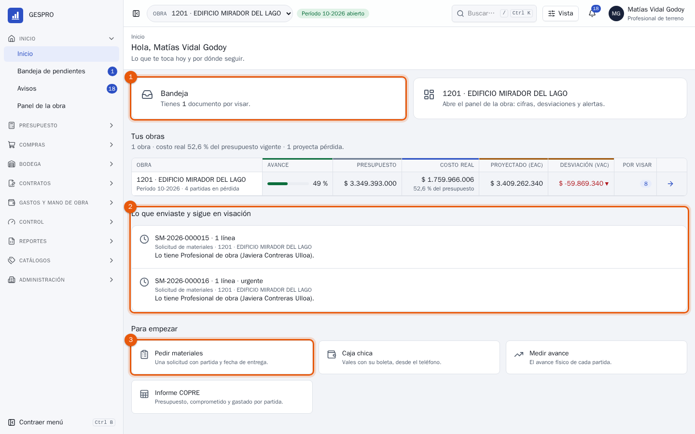
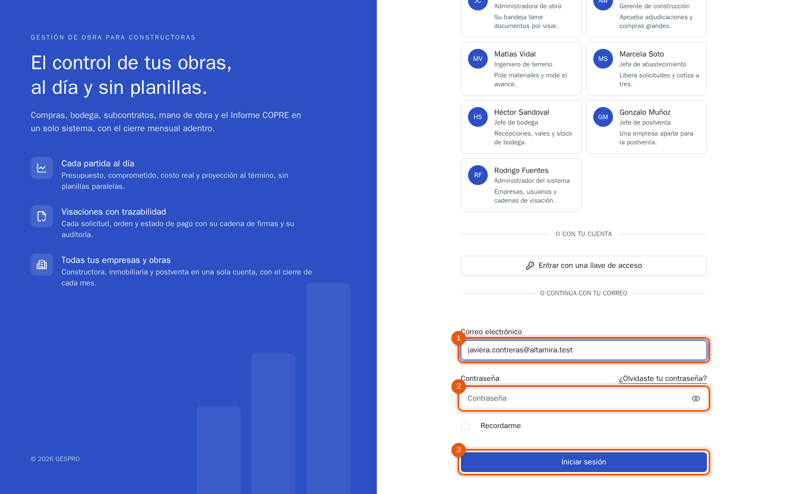
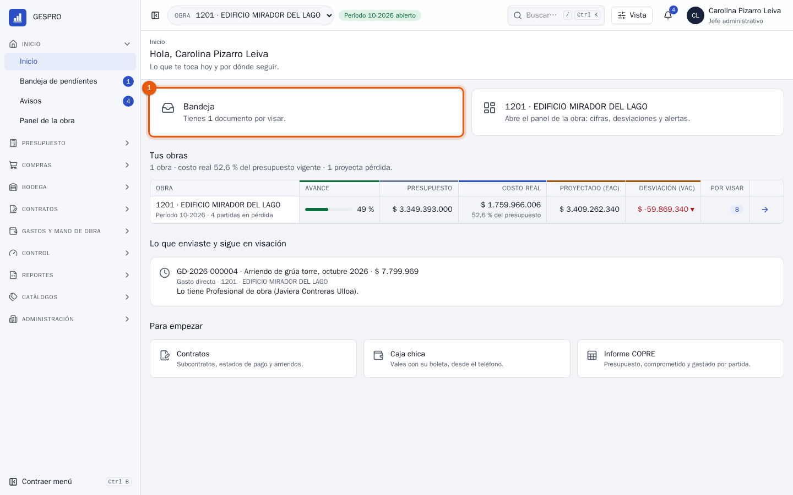
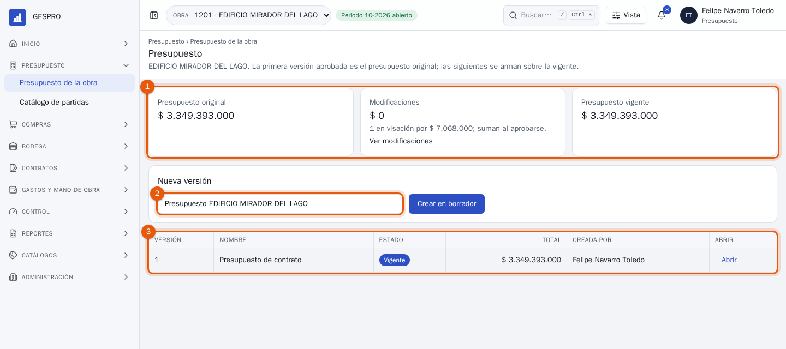
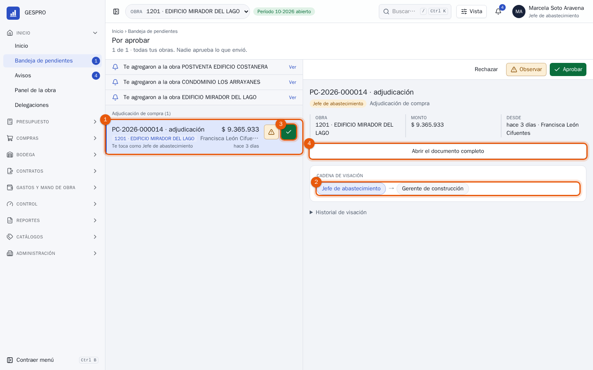
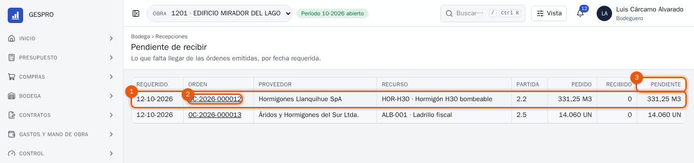
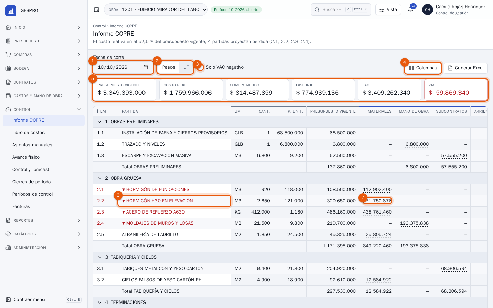
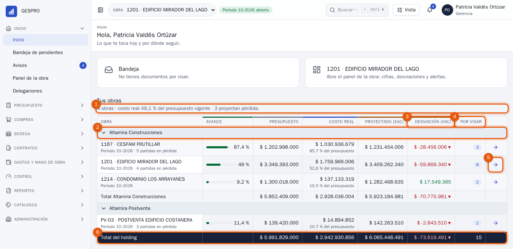

Manuales de usuario
Ocho manuales con las pantallas reales de GESPRO: desde quien mide en terreno hasta la gerencia que cierra el mes. Los ejemplos usan los datos de demostración: el holding Altamira y su obra 1201 Edificio Mirador del Lago.

Profesional de terreno Para el ingeniero o profesional de terreno: pedir los materiales que la obra necesita, retirarlos de bodega para cada partida, medir lo que se construyó y dar la primera firma a lo que cobran los subcontratistas. Inicio · Solicitudes de materiales · Vales de salida · Avance físico · Caja chica · Bandeja
Administración de obra Para el profesional o administrador de obra: la persona que responde por la obra y aprueba en primer lugar casi todo lo que se pide, se recibe y se gasta en ella. Este manual explica cómo hacerlo en el día a día. Bandeja de pendientes
Jefe administrativo Para quien lleva la administración de la obra: la caja chica, los papeles y los cobros de los subcontratistas, las remuneraciones que llegan de BUK y los tratos. Todo lo que aquí se aprueba o se confirma pasa a ser costo de una partida. Bandeja · Caja chica · Subcontratos · Estados de pago · Mano de obra · Tratos
Presupuesto Para quien arma y mantiene los presupuestos de obra: las partidas con su análisis de precio, las modificaciones que mueven monto de una partida a otra, las versiones nuevas cuando cambia el contrato y los informes que pide el mandante. Presupuesto de la obra · Modificaciones · Informes del presupuesto · Catálogo de partidas · Catálogos
Abastecimiento Para la jefatura de abastecimiento y los compradores: cómo una solicitud aprobada en la obra se convierte en una orden de compra emitida, con tres cotizaciones comparadas y la adjudicación visada. Liberación · Procesos de compra · Órdenes de compra
Bodega Para el bodeguero y el jefe de bodega: cómo entra el material a la obra contra su orden de compra, cómo sale a cada partida con un vale y cómo se cuenta la bodega sin ver la cifra del sistema. Recepciones · Vales de salida · Stock y kardex · Inventarios
Control de gestión Para quien lleva el control presupuestario de la obra: leer el Informe COPRE, bajar de una cifra a su documento, proyectar el término con el forecast, explicar las desviaciones y cerrar el mes. Informe COPRE · Libro de costos · Control y forecast · Cierres de período · Asientos manuales
Gerencia Para la gerencia general: ver cómo va cada obra y el holding completo, entrar al detalle de la que preocupa, aprobar el cierre de cada mes, delegar las aprobaciones durante una ausencia y revisar quién hizo qué. Inicio · Panel de la obra · Bandeja · Cierres de período · Delegaciones · Auditoría